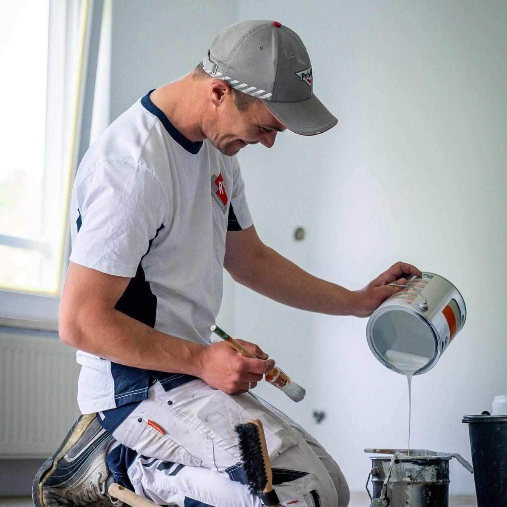

Binnenschilderwerk
Verkleuringen, barsten, blaasjes of gewoon toe aan iets nieuws? Wij schilderen kozijnen, deuren, trappen, plinten en ornamenten en sauzen uw wanden en plafonds. Liever behang of vliesbehang? Ook dat brengen we aan.
Een goede verflaag en goed kitwerk beschermen ook binnen tegen vocht uit douche, keuken en verwarming.